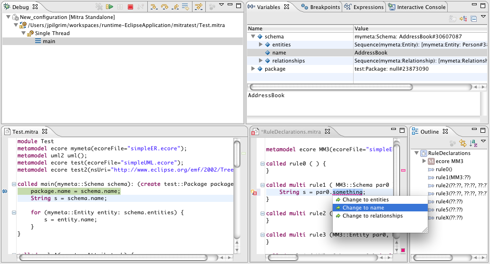

Mitra model to model transformation language
Eclipse P2 update sites
View the Project on GitHub github.com/jpilgrim/mitra2
Mitra2 Wiki github.com/jpilgrim/mitra2/wiki
Mitra2 Users Mailinglist groups.google.com/group/mitra2-users
Mitra2 Issues github.com/jpilgrim/mitra2/issues
Mitra2 is an operational model-to-model language, integrated into the Eclipse IDE. It supports ecore (EMF) based models, particularly Eclipse UML2 based models. The language syntax is quite similar to Java to make it easy for Java programmers. It provides certain features useful for model transformations, such as OCL collections, multiple return parameters, cached and triggered rules (similar to methods/procedures), and an explicit trace model. Mitra2 can be used for monolithic transformations and so called micro-transformations, in order to use it within (graphical) editors for performing single transformation steps.
 Screenshot of the Mitra IDE with running debugger. Clockwise (starting top left):